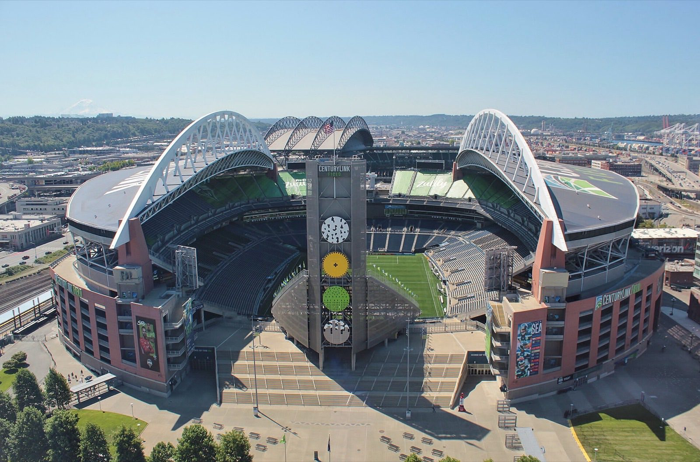

We scouted five teams. The bracket sent a sixth.
This page spent a month profiling Switzerland, Sweden, Norway, Ivory Coast, and Austria as our most likely Round of 32 opponents. The third-place math did its own thing and sent us Bosnia and Herzegovina instead. Final score: USA 2-0 Bosnia, July 1, Levi's Stadium. Our first knockout win since 2002. The five scouting reports stay below exactly as written, because owning your predictions is half the fun of making them.
Levi's Stadium · photo Matthew Roth · CC BY-SA 2.0 · Wikimedia Commons
Bosnia. The night we dug deep.
Not one of my five. Better than all five, because it actually happened, and because of how it happened.

Folarin Balogun opened it in the 45th minute, right on the edge of halftime, and Levi's got loud in a way I could feel through a television in Wisconsin. One up at the break, a knockout game finally tilting our way.
Then the 61st minute. Balogun went in with his studs on Tarik Muharemović, VAR took its look, and the red came out. Our goalscorer, off. Ten men, roughly twenty-nine minutes to hold, in a World Cup knockout game. I have watched this program my whole life and I know exactly what that setup usually becomes.
Not this time. This team defended like the lead was a person they loved. And in the 82nd minute Malik Tillman stepped up to a free kick and buried it. 2-0, ten men, door shut. The whistle blew and I understood something new about this group of players.
What it meant
First US men's World Cup knockout win since 2002, and only the second in program history. And a piece of stranger history too: Balogun became the first player to score and be sent off in the same World Cup knockout game since Zidane in the 2006 final. My guy shares a stat line with Zizou now. Forever.
Christian Pulisic said it best after: "We had to dig deep for that one." Yes. Yes we did.
The aftermath, which was its own movie
Balogun's red should have meant a suspension for the Round of 16. Then FIFA suspended the ban under Article 27 probation, and Belgium filed a protest that was ruled inadmissible hours before kickoff. I found out on July 5 and did what any healthy adult does with joy: I forwarded the news to roughly eighty friends in one hour. The best reply, from a friend: "open corruption? In our favor? We're finally a real soccer team 🥹"
Where I watched it
I watched this one from Dragon House in Stoughton, Wisconsin, with the Francksens. A US World Cup knockout win, in a living room full of people I love, in a little Norwegian town in the Midwest. I would not trade that seat for one at Levi's.
And the night before, the town itself: "i went to the Old Firehouse to watch soccer with the Stoughton community 🇳🇴" is a real text I sent on June 30, and I stand by every word of it. Stoughton caught the fever right alongside me.
G
The five we scouted, kept as written.
Everything below is the scouting page exactly as it stood before the tournament sorted itself out. Switzerland, Sweden, Norway, Ivory Coast, Austria. Bosnia is nowhere on it. I am keeping all five writeups untouched, because this is what we believed going in, and the believing was part of the summer. One clearly-marked update sits in the Norway card, because that story kept going without us.
Switzerland.
Star: Granit Xhaka. Why they finish 3rd: Group B has Canada and Qatar above them. Switzerland is a knockout-instinct team that often slips group-stage games against weaker sides.
The shape
Organized, disciplined, methodical. They always reach knockouts. They are not a "good 3rd-place" team, they are an elite small-nation tournament side.
How they hurt USA
Defensive structure that forces USA to break them down patiently. Set pieces. Late-game game-management when leading. Penalty shootouts are their entire identity.
How USA wins
Win the first 30 minutes. Get a goal early. If you let Switzerland into the second half level, you're in a penalty shootout.
Sweden.
Stars: Alexander Isak (Liverpool) and Viktor Gyökeres (Arsenal). Why they finish 3rd: Group F has Netherlands, Japan, and Sweden all of broadly similar quality. The math says someone finishes 3rd.
The shape
If 3rd in Group F, Sweden brings the best striker duo of any 3rd-place team in the field. Liverpool's Isak plus Arsenal's Gyökeres is a nightmare matchup for any back four. First WC since 2018.
How they hurt USA
Long balls into Isak's run, second balls to Gyökeres. Tactical fouls in midfield. Counter-attacks at pace.
How USA wins
Don't concede the early goal. Pin them in their own half. Sweden has shown an ability to defend leads with maximum urgency. Don't let them have one.
Norway.
Star: Erling Haaland. First WC since 1998. Why they finish 3rd: Group I has France above them and Senegal of equal level. Norway is otherwise an average squad.
The shape
Haaland's first World Cup. Norway is not a particularly creative team. The whole game plan is "get Haaland the ball in dangerous areas." If he gets one chance, it is one goal.
How they hurt USA
One ball over the top to Haaland. Set pieces aimed at his height. Counter-attack pace through Oscar Bobb on the wing.
How USA wins
Cut the supply, beat the team. Ream and Richards have to be perfect with their positioning on long balls. If Norway never gets the ball to Haaland's feet in his shooting zone, they have very few other answers.
Personal note from Gordon
I'll be watching the Norway R32 match from Wisconsin with the Francksens, the same day or close to the same day as the US R32. Haaland is the most exciting story in this group of five. Beating him would be a moment.
Update, July · what actually happened
We never got Norway. But two of my five played each other in this round: Norway beat Ivory Coast 2-1, and then Haaland got his moment after all, just against Brazil instead of us: Norway 2-0 Brazil in the Round of 16. I happened to be living in a Norwegian town in Wisconsin while all of this unfolded, and Stoughton flew its Norwegian flags like it had been waiting a hundred years for permission. My real text from July 5: "When in Stoughton do as the Norwegian soccer team, wait for the end 😍🇳🇴"
Ivory Coast.
Star: Sébastien Haller. AFCON 2023 champions. Why they finish 3rd: Group E has Germany and Ecuador above them, but they're squarely in the mix to be third.
The shape
Dynamic, technical, deep on the wings. AFCON champions returning to the world stage. Always dangerous on counter.
How they hurt USA
Pace on the wings. Set pieces (their AFCON win included multiple set-piece goals). Crowded midfield.
How USA wins
Don't underestimate them. They have been the most-undersold AFCON champions in recent memory. Match their technical level. Play through midfield, not around it.
Austria.
Star: David Alaba. First WC since 1998. Why they finish 3rd: Group J has Argentina above them and Jordan as a wildcard. Austria is the second-best team but could slip.
The shape
Rangnick high-press. Aggressive, structured, physical. They will pressure USA's build-out from the first whistle.
How they hurt USA
Press intensity that forces errors in the back. Pace in transition. Set-piece power.
How USA wins
Quality on the ball. Adams and McKennie have to play through the press. If you can break Austria's first wave, the second wave is less organized.

Lumen Field · photo SounderBruce · CC BY-SA 4.0 · Wikimedia Commons